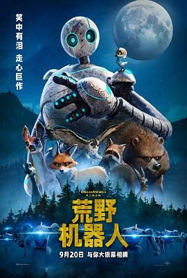

荒野机器人 / The Wild Robot
又名：荒野机械人(港)
梦工厂诚意满满的作品，从水彩画风格的上色，中规中矩的剧情，到片尾每一个小动物特写动画介绍配音的名字，以及最后用最大的一棵树展示credits名单，而且还有彩蛋。很久没看到这么用心做的动画了。笑点也有（比如说小天鹅长大学机器人说话），心酸也有（学会了飞行终于要离开父母了，留守老人单调的老年生活），简直写实。
作品信息
| 导演 | 克里斯·桑德斯 |
| 编剧 | 克里斯·桑德斯 |
| 主演 | 露皮塔·尼永奥 / 佩德罗·帕斯卡 / 基特·康纳 / 凯瑟琳·奥哈拉 / 比尔·奈伊 / 许玮伦 / 亚历桑德拉·诺薇儿 / 马特·贝里 / 文·瑞姆斯 / 马克·哈米尔 / 保罗·迈克尔·威廉姆斯 |
| 类型 | 科幻 / 动画 / 冒险 |
| 制片国家/地区 | 美国 |
| 语言 | 英语 |
| 上映日期 | 2024-09-20(中国大陆) / 2024-06-11(安纳西国际动画电影节) / 2024-09-27(美国) |
| 片长 | 102分钟 |
| IMDb | tt29623480 |
说过什么
2024-10-22 15:26:40
看过 · 时间来自广播，短评来自标记页
梦工厂诚意满满的作品，从水彩画风格的上色，中规中矩的剧情，到片尾每一个小动物特写动画介绍配音的名字，以及最后用最大的一棵树展示credits名单，而且还有彩蛋。很久没看到这么用心做的动画了。笑点也有（比如说小天鹅长大学机器人说话），心酸也有（学会了飞行终于要离开父母了，留守老人单调的老年生活），简直写实。
2024-10-19 07:46:38
广播 · 想看
最后一次看到是 2026-08-01T11:04:15+10:00 · 豆瓣原页